In the community
Moments of impact
A visual record of the Commissioner's work — advocacy, training, and engagement across Kenya, the Gambia, South Africa, and beyond. Click any image to view it full-size.

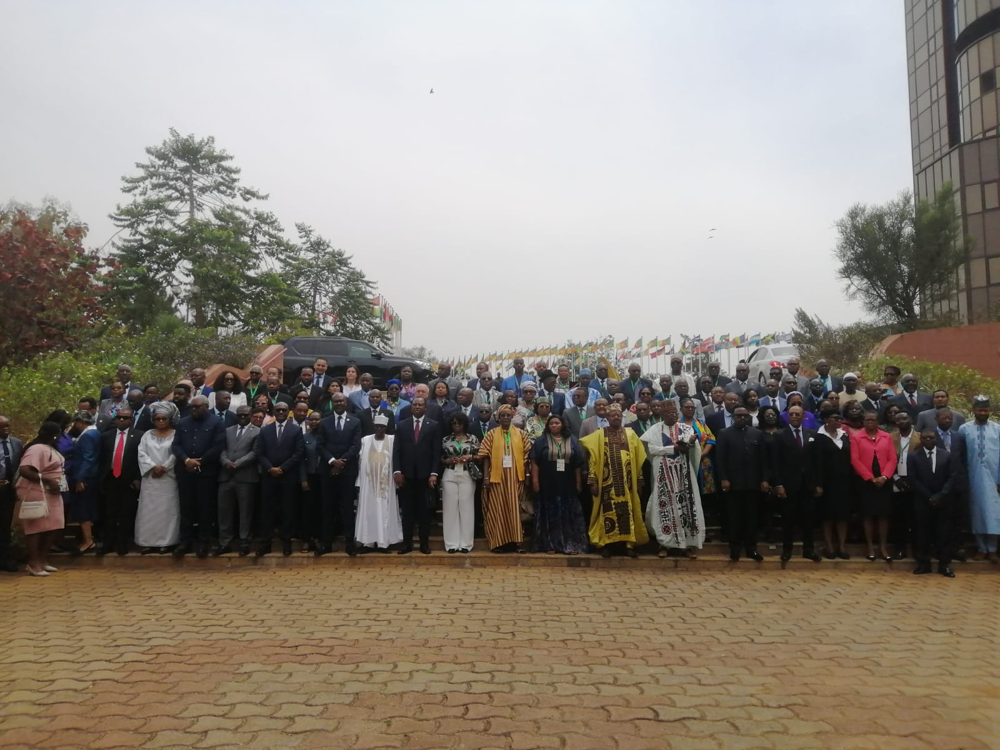
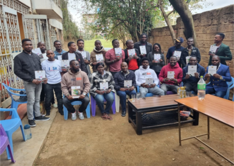
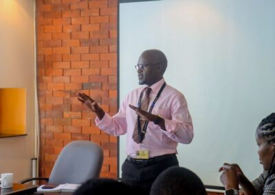
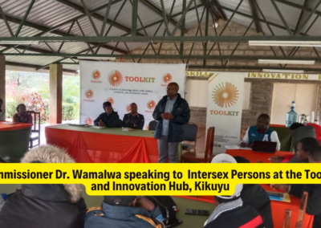
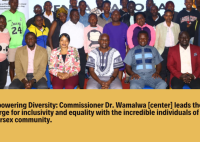
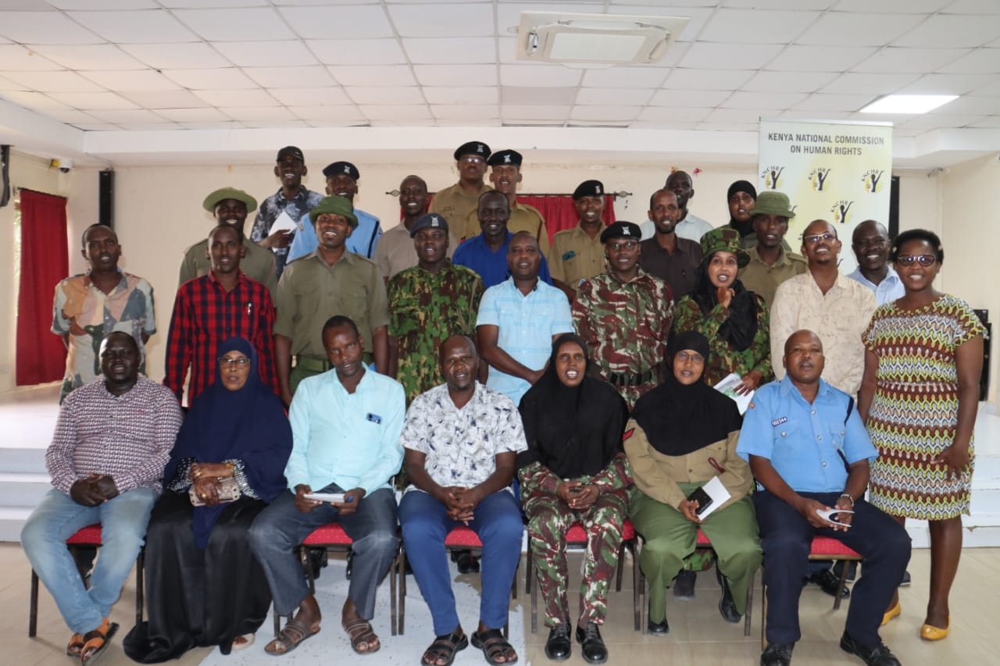
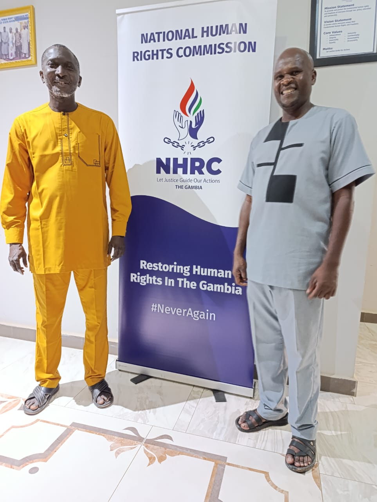

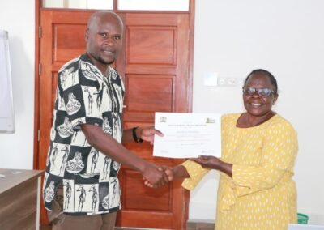
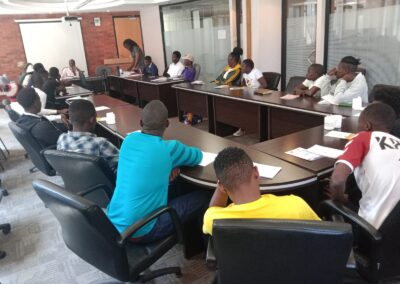

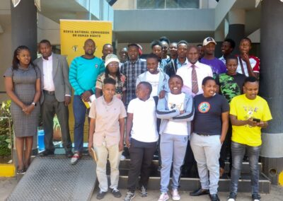
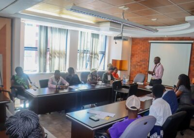
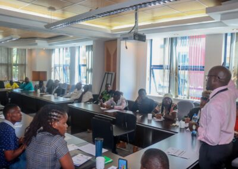
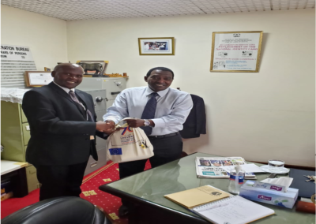

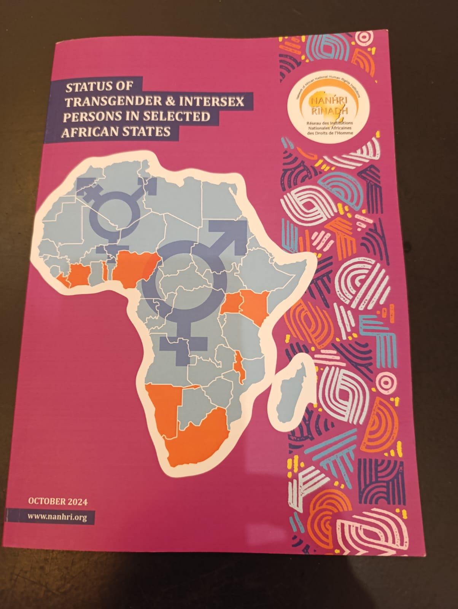
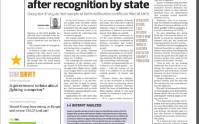

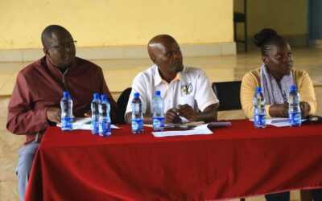
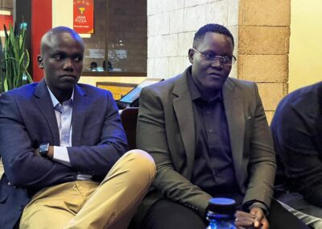


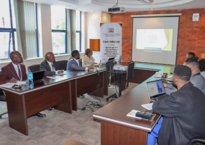
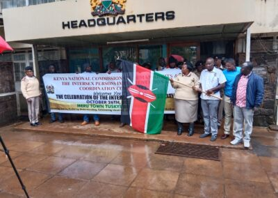

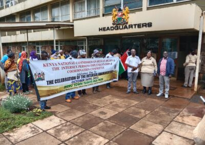
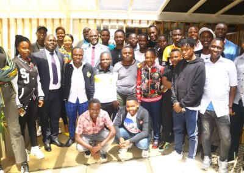
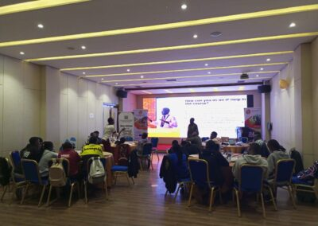
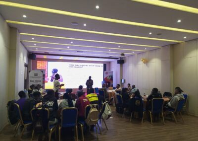
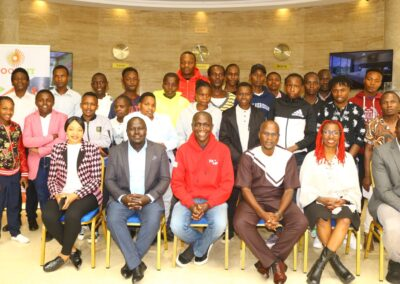
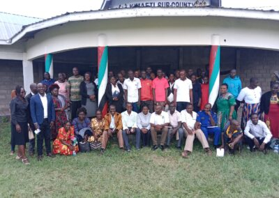

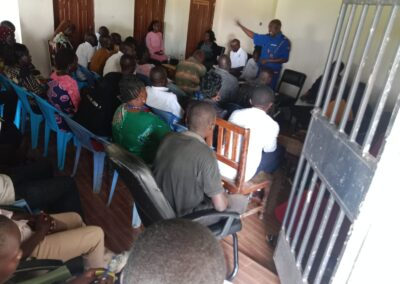
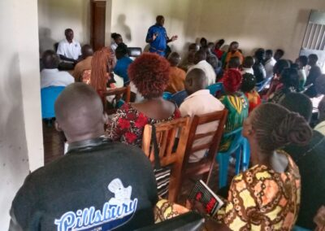
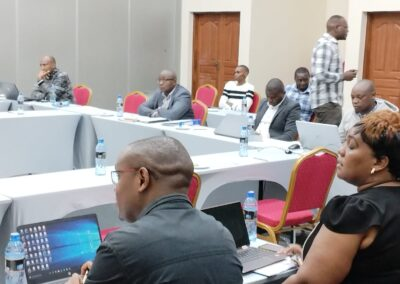
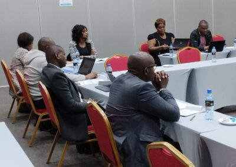
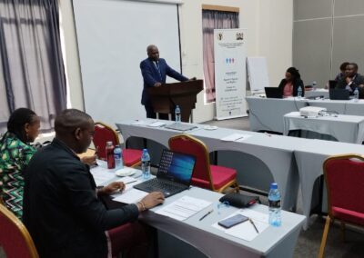
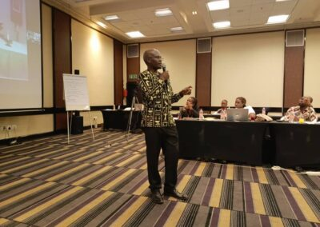
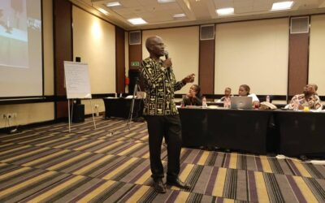
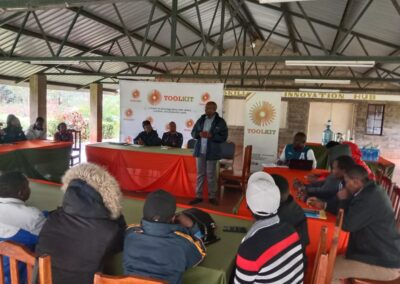
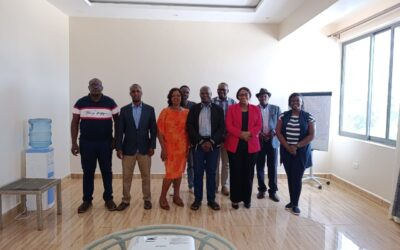
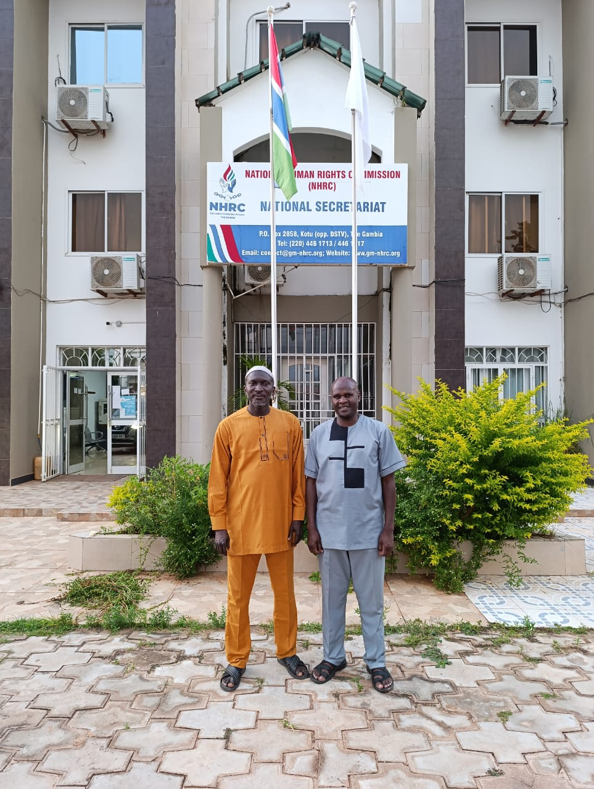
Be part of the story
Help write the next chapter
Every image here represents a life touched and a right defended. Add your voice to the movement for dignity and equal rights.